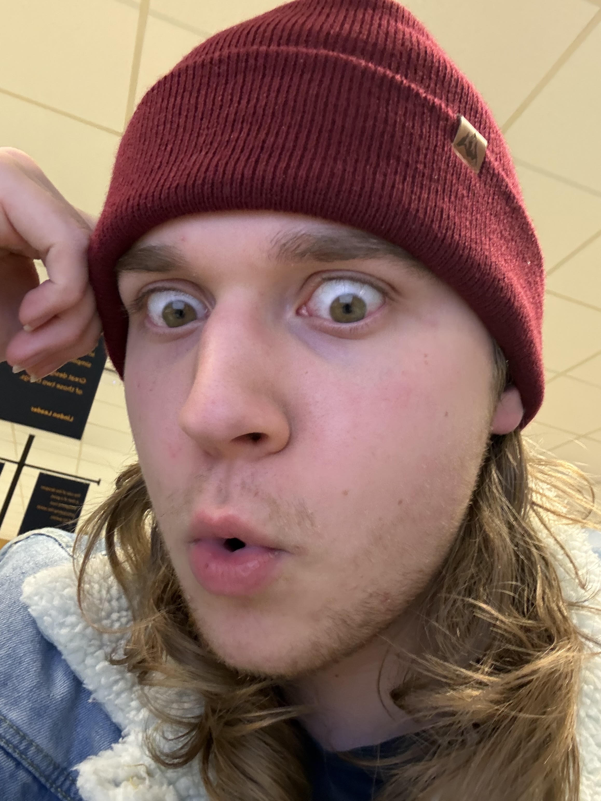

Lawrence R. Sykes | Graphic Designer

I’m a graphic design student currently building my skills and figuring out what kind of designer I want to become. I’ve always enjoyed working with visuals and finding different ways to turn an idea into something people can see and understand. A lot of what I’ve learned has come from working through projects, experimenting with different ideas, and learning programs like Affinity along the way. I’m still developing my style, and I like being able to try different approaches rather than sticking to one particular look. Outside of design, I’m someone who enjoys outdoor activities, video games, movies, music, and other creative interests. I tend to be more independent and like taking the time to work things out for myself. Right now, I’m focused on finishing my education, building a portfolio I’m proud of, and seeing where my interests take me next.
My work includes a variety of creative projects, from branding and logo design to promotional materials and digital graphics. Each project gives me an opportunity to develop my skills and explore new creative approaches.
This portfolio showcases my work, creative interests, and development as a graphic designer.